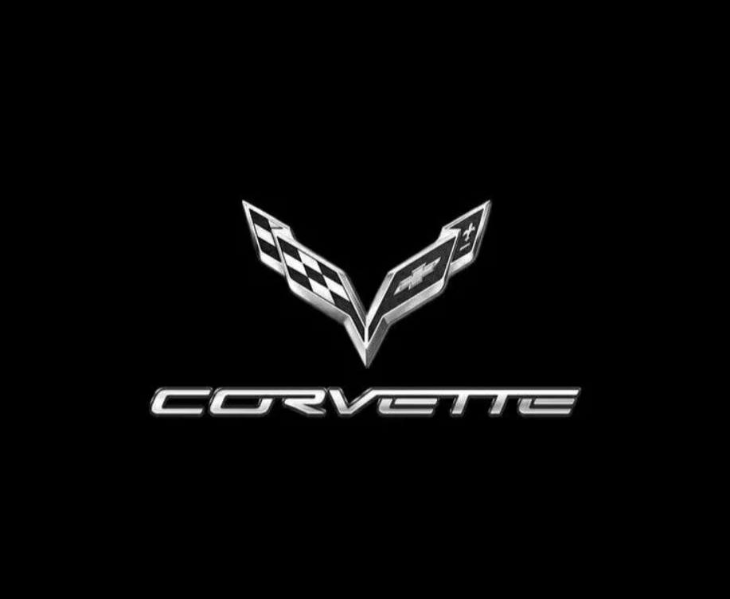

The Chevrolet Corvette is a line of American two-door, two-seater sports cars manufactured and marketed by General Motors under the Chevrolet marque since 1953.Throughout eight generations, indicated sequentially as C1 to C8, the Corvette is noted for its performance, distinctive styling, lightweight fiberglass or composite bodywork, and competitive pricing. The Corvette has had domestic mass-produced two-seater competitors fielded by American Motors, Ford, and Chrysler; it is the only one continuously produced by a United States auto manufacturer. It serves as Chevrolet's halo car.
In 1953, GM executives approved a proposal from Myron Scott, then assistant director of Public Relations, to name the new sports car after the corvette — a small, agile warship. The car started out as a modest, lightweight six-cylinder convertible, but the later addition of V8 engines, improved chassis design, and eventually a rear mid-engine layout pushed it steadily upmarket into more serious sports-car territory. The second generation arrived in 1963, offered in both coupe and convertible forms. The first three generations (1953–1982) were built using body-on-frame construction, while every Corvette from the C4 onward — introduced in 1983 as an early 1984 model — has used GM's unibody Y-body platform. For seven generations, through 2019, the Corvette kept its engine at the front-center of the car, before switching to a rear mid-engine layout with the C8.
Corvette production originally took place in Flint, Michigan, and later St. Louis, Missouri, before moving to Bowling Green, Kentucky, in 1981 — where it remains today and where the National Corvette Museum is also located. Over the decades, the Corvette has earned the nickname "America's Sports Car." According to Automotive News, its appearance on the early-1960s TV show Route 66 helped cement its association with freedom and the open road, eventually cementing its status as one of the most influential and best-selling sports cars ever built.
